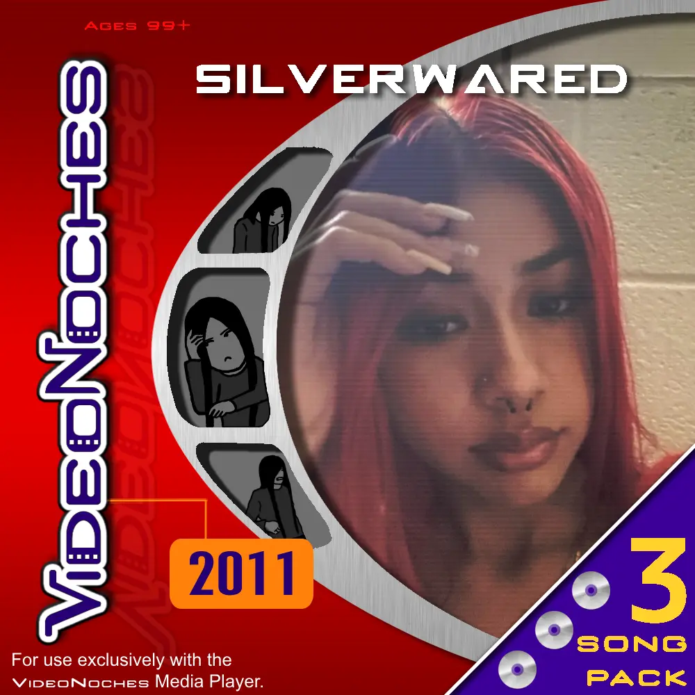

☺2026 SILVERWARED.
this project is silverwared.
ADVERTISEMENT
"Who the HECK is that girl on the right!?!?!?!????"
idk, I found the picture on Pinterest, thought it looked cool, found her ig, and asked for permission to use it, and she said yea. Also there are 3 drawing of me in the little metal part that's supposed to be a film reel (I'm pretty sure). Starting from the top...
Also after I made 2010, I didn't plan on making a 2011, 2012, etc... but since I'm sooo lazy, and people kept telling me to drop music, I just named the next EP 2011.

There are only 3 songs because I didn't want that many because, ugh... each song is about a girl who rejected me (I'm so weird dude...)
Tracklist:
☺2026 SILVERWARED.
this project is silverwared.